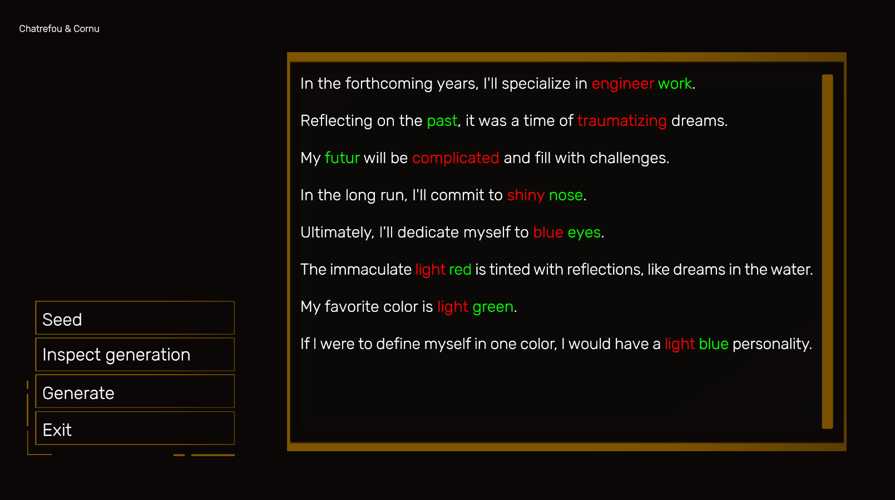

- WFC (What a Fun Creator) -

Contexte du projet
WFC, ou "What a Fun Creator", est un projet axé sur la randomisation et l’interface utilisateur (UI). Il vise à offrir des expériences aléatoires captivantes tout en conservant une interface simple et intuitive.
Date de création du projet
Réalisé en 2024 dans le cadre du Gaming Campus.
Equipe
Projet développé en collaboration avec un autre développeur.
Liens vers le Code et la Build du jeu
Code
Cliquez ici pour accéder au GitHub